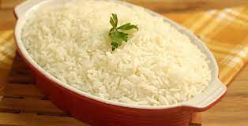

Voltar ao menu principal

O preparo do arroz soltinho não tem mistério:
seguir a proporção e o tempo que ele dá certo.
Refogado com cebola e louro, fica saboroso e perfumado.
Lista de ingredientes
- 1 colher (sopa) de óleo
meia cebola pequena picada
- meia cebola pequena picada
- 1 dente de alho pequeno picado
- 1 e meia xícara (chá) de arroz
- 1 colher (sopa) de MAGGI® Fondor
- 3 xícaras (chá) de água fervente
Modo de preparo
- Refogue o alho e a cebola no azeite.
- Coloque o arroz e deixe fritar por cerca de 30 segundos
- Adicione a água fervente e o sal.
- Abaixe o fogo e deixe cozinhar até a água quase secar
- Tampe a panela e aguarde cerca de 20 minutos antes de servir.
Video da receita
Como fazer arroz